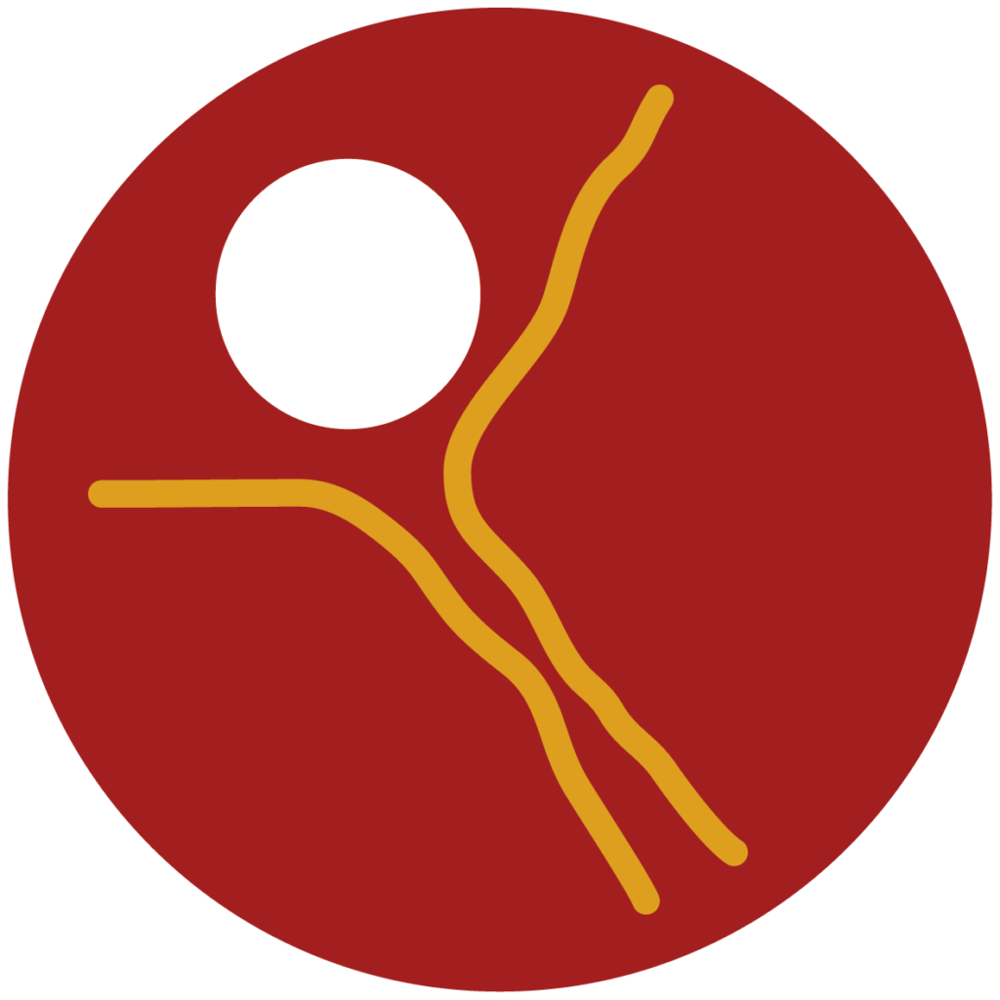

Bienvenido a nuestro boletín informativo oficial. Este espacio está diseñado para brindarle una visión clara y actualizada de nuestro trabajo, los valores que nos guían y la gama de iniciativas que ponemos a disposición para el desarrollo integral de la juventud.
Quiénes somos
El Grupo Scout San Cayetano es una entidad civil sin ánimo de lucro dedicada a la educación no formal de los jóvenes, situada en Caracas, Venezuela, y afiliada a la Asociación de Scouts de Venezuela.
Fundado oficialmente en 1971, nuestro grupo pertenece al Distrito Sucre Norte y emplea el método scout para fomentar valores, liderazgo y responsabilidad social mediante actividades al aire libre.
Nuestra misión principal es empoderar a los jóvenes mediante herramientas educativas y vivenciales que aseguren un crecimiento personal y social sostenible, sustentado en la empatía, el trabajo colaborativo y el compromiso comunitario.
Dónde nos ubicamos
Nuestra sede principal se encuentra situada en la Calle Humocaro, Parque Fernando Monguí, Urbanización Horizonte, El Marqués, Caracas.
Desde nuestras instalaciones coordinamos las actividades semanales, talleres y proyectos comunitarios. Nuestro alcance operativo abarca tanto las actividades locales en la sede como excursiones de campo y proyectos de servicio social en distintas zonas de Caracas.
¿Qué hacemos?
Nos enfocamos en la educación mediante la acción bajo el lema "aprender haciendo", estructurando nuestras actividades en cuatro áreas fundamentales:
- Vida al Aire Libre y Supervivencia: Campamentos, cocina sin utensilios y exploración de la naturaleza.
- Desarrollo del Liderazgo y Autogobierno: Organización en patrullas donde los jóvenes eligen sus líderes y toman decisiones democráticas.
- Servicio a la Comunidad: Voluntariado, apoyo social y conservación del medio ambiente.
- Juegos, Tradiciones y Mística: Dinámicas y ceremonias para fortalecer valores, la salud y la cohesión del grupo.
Unidades del Grupo
La Manada de Lobatos y Lobeznas (6 a 11 años)
Socializa a los niños y enseña valores mediante el juego cooperativo basado en "El Libro de la Selva". Desarrolla la escucha activa, el reconocimiento en el Consejo de la Roca y la exploración de talentos mediante el programa de Especialidades y excursiones de observación natural.
La Tropa Scout (11 a 16 años)
Promueve la autosuficiencia y el liderazgo en la naturaleza. Los scouts construyen estructuras con técnicas de pionerismo (puentes, cocinas elevadas), aprenden supervivencia (fuego, purificación de agua), organizan excursiones de montaña y se capacitan en primeros auxilios.

El Clan de Rovers (16 a 21 años)
Orientado a la acción social y el voluntariado. Los Rovers gestionan y ejecutan proyectos en comunidades vulnerables, realizan expediciones de introspección, fortalecen sus habilidades de liderazgo y diseñan sus planes de vida hacia el futuro profesional.
Manuales de Especialidades (37)
Selecciona un área para consultar los manuales del programa de progresión aplicables según el nivel de tu unidad (Manada, Tropa y Clan):
Artes y Hobbies (8)
Ciencia y Tecnología (7)
Cultura Física (7)
Identidad Nacional (1)
Defensa Nacional
Ver PDFPreparación para el Trabajo (7)
Información sobre pagos
Los aportes financieros para la Asociación de Scouts de Venezuela se dividen en:
- Pagos Obligatorios: Registro Nacional anual (seguro y administración) y Cuota de Grupo (mantenimiento logístico local).
- Equipamiento Personal: Inversión progresiva en uniforme oficial, pañoleta y equipo de campamento.
- Pagos Eventuales: Financiamiento independiente para transporte, comida y derechos de uso en campamentos o eventos distritales/nacionales.